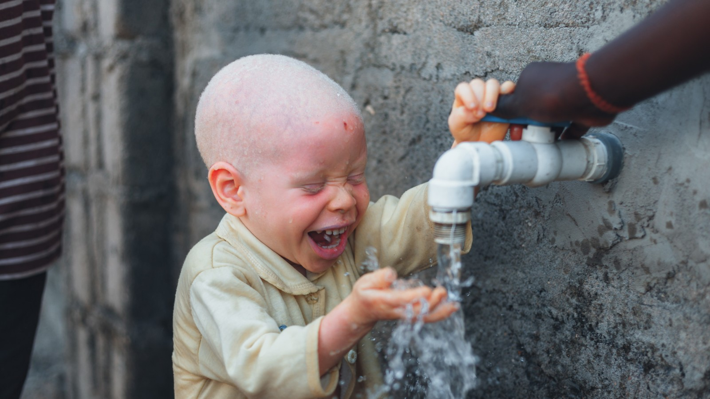

Chalk Dust Exposure in Classrooms: Causes, Symptoms & Solutions
How chalk dust affects the health of students and teachers in classrooms without whiteboards, and why switching away from chalk matters.
Read article →How attitudes toward people with albinism in Tanzania have shifted across generations — from ancient folklore to today's advocacy movement.

Albinism carries a different weight in Tanzania than almost anywhere else on earth. We are talking about a country with one of the highest recorded rates of oculocutaneous albinism (OCA2) in the world — roughly 1 in every 1,400 births, compared to about 1 in 20,000 in the United States. That single statistic explains why the story of albinism in Tanzania cannot be told only through medicine. It is a story of biology colliding with belief, of visibility becoming vulnerability, and of a community slowly, painfully, building a public voice.
Below, we trace how attitudes toward people with albinism in Tanzania have shifted across generations — from ancient folklore, through a violent and well-documented crisis in the 2000s and 2010s, to the advocacy movement and government action shaping the present day.
Albinism is a genetic condition, not a disease, a curse, or a punishment. In Tanzania, it is almost always oculocutaneous albinism type 2, caused by an inherited mutation affecting melanin production in the skin, hair, and eyes. Because both parents must carry the recessive gene, the condition can appear even in families where neither parent shows any visible signs of it — which historically fuelled suspicion rather than understanding.
The result is a population that is highly visible in a society where dark skin is the overwhelming norm. That visibility, combined with intense equatorial sun exposure and a serious lack of access to sunscreen, protective clothing, and dermatological care, has made skin cancer one of the leading health threats facing people with albinism in Tanzania — often cutting life expectancy dramatically shorter than the national average.
Long before albinism was understood scientifically, many Tanzanian communities interpreted it through a spiritual lens. In some traditional belief systems, a child born with albinism was seen as a bad omen, a spirit, or even a being with supernatural power. Other communities held the opposite view, treating people with albinism as blessed or sacred figures. Either interpretation, however well-meaning it may have seemed at the time, placed people with albinism outside the category of "ordinary human being" — and that framing left the door open to exploitation.
Superstitions linking albinism to witchcraft, fertility, and even miracle cures for illness persisted for generations in various forms, passed down through oral tradition rather than formal record. These beliefs didn't disappear with modernisation — they mutated, and in the 2000s, they turned deadly.
From the mid-2000s onward, international media and human rights organisations began reporting a disturbing pattern: people with albinism in Tanzania were being abducted, mutilated, and killed for their body parts, which witch doctors sold into a black market built on the belief that albino body parts brought wealth, luck, or political success. Limbs, hair, and other body parts were trafficked for use in rituals, often commissioned by fortune-seekers, miners, or businesspeople hoping to improve their fortunes.
Tanzania's northern regions, particularly areas around Lake Victoria, reported the highest concentration of attacks. Entire families relocated out of fear. Children with albinism were pulled from school. Some parents sent their children to government-run shelters simply to keep them alive.
Out of this crisis came an unlikely symbol of resilience: Ukerewe Island in Lake Victoria became known as a relative safe haven, where a large community of people with albinism settled together, supported one another, and began organising cultural and awareness events rather than living in isolation and silence.
The crisis eventually forced political change. In 2008, Tanzania's then-president Jakaya Kikwete appointed Al-Shymaa Kway-Geer, the country's first Member of Parliament with albinism — a landmark moment that gave the community direct representation in national politics for the first time. Her appointment, and the platform it created, helped shift albinism from a whispered taboo into a subject of open national debate.
Government crackdowns on witch doctors followed, along with public awareness campaigns and, eventually, formal policy commitments. In December 2024, Tanzania launched a five-year National Action Plan on Albinism, designed to protect the rights, safety, and health of people with albinism across the country — covering everything from law enforcement response to healthcare access and education.
It would be misleading to suggest the crisis has ended. While the intensity and frequency of attacks have declined significantly compared to the peak years, incidents still occur, including tragic cases involving young children in recent years. Advocacy groups continue to report that stigma, discrimination, and unequal access to healthcare and education remain everyday realities for many people with albinism in Tanzania — not just occasional, headline-grabbing violence.
Where progress is visible, it tends to be community-driven: organisations run by and for people with albinism, awareness campaigns in schools, distribution of sunscreen and protective clothing, and survivors who have become public advocates rather than remaining hidden. This shift — from silence to visibility, from shame to leadership — is arguably the most meaningful transformation of the past two decades.
Understanding albinism in Tanzania through time isn't just an academic exercise. It's a reminder of how quickly misinformation can turn into real, physical danger for a vulnerable group, and how education, representation, and sustained advocacy can slowly reverse that damage. The people with albinism who have survived this period and stepped into public life — as politicians, teachers, activists, and community leaders — are rewriting a narrative that once defined them only by superstition.
Tanzania's journey is far from finished. But compared to where the country stood twenty years ago, the direction of change is unmistakable: toward dignity, protection, and inclusion, rather than fear.

How chalk dust affects the health of students and teachers in classrooms without whiteboards, and why switching away from chalk matters.
Read article →
The real story of albinism in Tanzania — the discrimination, the danger, and the everyday impact on health and life, and how change is happening.
Read article →Whether you give, partner, donate equipment or simply share our story, you help Tanzanian students learn in better conditions.